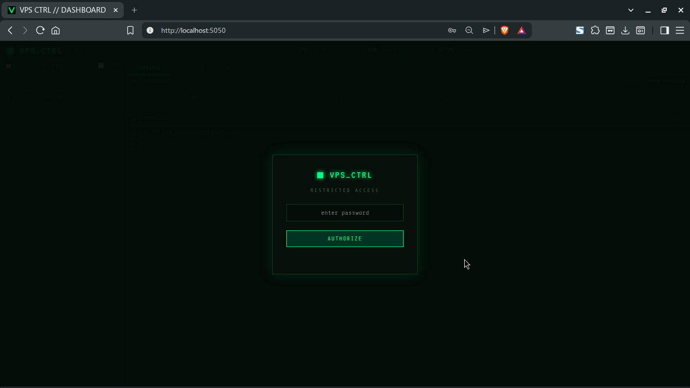

The lightweight, terminal-first dashboard designed for developers who value speed, security, and aesthetics.
Fully isolated PTY sessions with xterm.js. Run nano, top, and vim natively in your browser.
Integrated Monaco Editor with syntax highlighting, auto-detection, and remote saving.
Persistent sidebar to monitor running apps, view active ports, and kill PIDs instantly.
Secure JWT-based sessions, HttpOnly cookies, and strict environment isolation.

No complex configurations. Run the automated installer and start managing your VPS immediately.
bash <(curl -s https://raw.githubusercontent.com/chriz-3656/VPS-CTRL/main/scripts/install.sh)